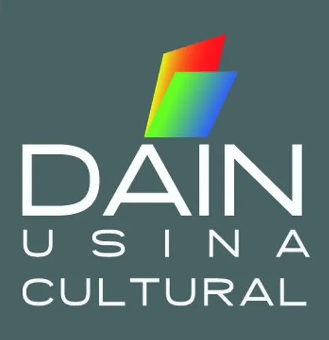

Liyo la puta madre activame el botiyo porque nuestra relacion depende de eso
Es un chiste no tan chiste !
Nosotros
En una de las ciudades con más librerías del mundo, Dain Usina Cultural (DUC) nació en 2011 con el objetivo de crear una experiencia única en Buenos Aires: reunir librería, café restó, galería de arte y un espacio multicultural excepcional.
Ubicado en Palermo, este tradicional edificio de los años 30 que cuenta con 540m2, permite que la literatura, el arte y la gastronomía, se unan generando una oferta cultural y gastronómica, que invita a la experiencia y el disfrute compartido.